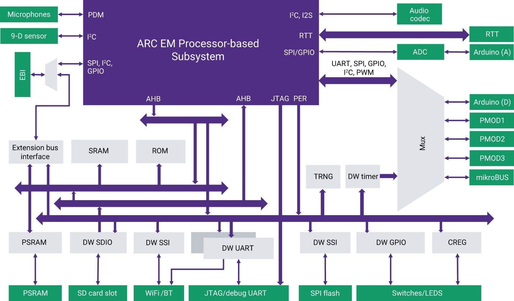
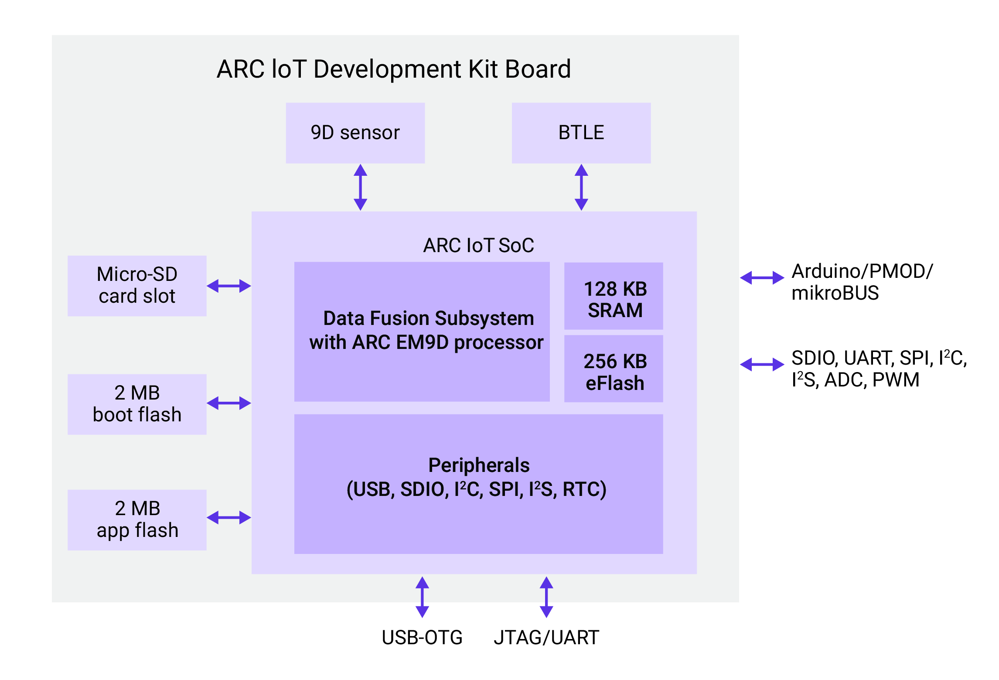
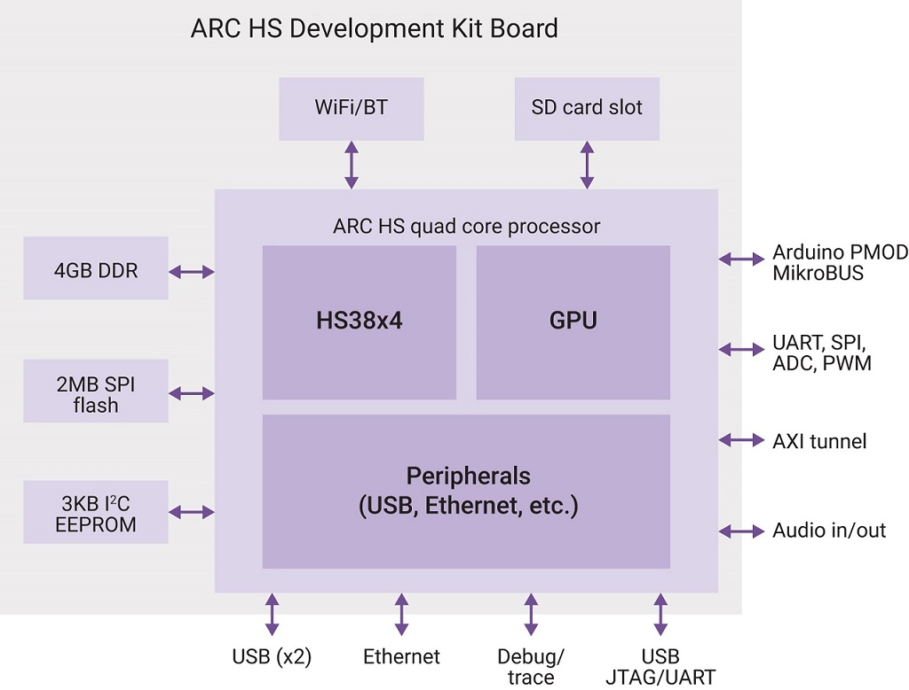

Development Platforms
ARC EM Software Development Platform (SDP)
The DesignWare® ARC® EM Software Development Platform (SDP) is a flexible platform for rapid software development on ARC EM processors and subsystems. It is intended to accelerate software development and debug of ARC EM processor-based systems for a wide range of ultra-low power embedded applications such as IoT, sensor fusion, and voice applications. The EM SDP includes an FPGA-based hardware board with commonly used peripherals and interfaces for extensibility. Downloadable platform packages containing different hardware configurations enable the board to be programmed with different ARC EM processors and subsystems. The packages also contain the necessary software configuration information for the toolchain and embARC Open Software Platform.
The development platform is supported by Synopsys’ ARC MetaWare Development Toolkit, which includes a compiler, debugger and libraries optimized for maximum performance with minimal code size. The embARC Open Software Platform (OSP), available online from embARC.org, gives developers online access to device drivers, FreeRTOS, middleware and examples that enables them to quickly start software development for their ARC-based embedded systems.
Key Features:
- Xilinx Kintex-7 XC7K325T-2FBG676C
- 32 MByte Quad-SPI Flash memory (for configuration and operation)
- USB-JTAG bridge FT2232H
- FPGA configuration through:
- JTAG
- SPI Flash memory
- SPI Flash configuration through:
- JTAG
- SPI Flash memory
- Connectors
- Arduino compatible pin headers
- MicroBUS compatible pin headers
- 3x Pmod compatible pin headers
- 50 pin header 2.54mm (40 single-ended IO, 20 differential lanes, variable VCCIO)
- Mictor Debug connector
- 10 pin Debug connector 2mm
- 2 x 8 MByte PSRAM IS66WVC4M16EALL
- 32 MByte User Quad-SPI Flash memory
- Micro SDcard Socket
- Wireless module RS9113-NBZ-D1C (Wi-Fi/BT/BLE)
- 3-axis gyroscope, 3-axis accelerometer, 3-axis magnetometer MPU-9250
- Stereo Audio Codec MAX9880A
- 2 x PDM Microphones SPK0641HT4H-1
- 2 x 3.5mm RCA audio jacks (input/output)
- 100MHz User Clock Oscillator SiT8008
- Status LEDs, Power LED
- 8 x User LEDs
- Reset Buttons
- User Button
- 2 x 4bit User DIP switches
- 12V Power Supply
- 12V fan

ARC IoT Development Kit
The DesignWare® ARC® IoT Development Kit includes a silicon implementation of the ARC EM9D-based ARC Data Fusion IP Subsystem
running at 144 MHz on SMIC’s 55-nm, ultra-low power process. The SoC also integrates a wide range of common peripheral interfaces,
on-board Bluetooth low-energy module for wireless connectivity and a 9-axis (gyro, accelerometer and compass) sensor for wearables and
other IoT applications.
The ARC IoT Development Kit is further extensible through available Arduino, mikroBus and Pmod connectors.
The ARC IoT Development Kit includes the following features:
- ARC IoT SoC
- 144 MHz EM9D Processor based Data Fusion Subsystem
- 256KB Closely Coupled Memory for instructions
- 128KB Closely Coupled Memory for data
- 32KB X-Memory
- 32KB Y-Memory
- Rich set of peripherals including USB 2.0 OTG, SDIO (x2), SPI, I2C, UART, I3C, RTC,ADC and PWM
- Memory and Storage
- 128KB SRAM
- 256KB eFLASH
- 2MB SPI Flash (x2)
- Interfaces and Modules
- USB2.0 OTG port
- USB Data port (JTAG/UART)
- Micro-SD Card
- 9D Sensor
- Bluetooth Low-Energy module
- ADC (16 channels)
- JTAG
- Power Management IC
The ARC IoT Development Kit is supported by a robust ecosystem of development tools and software including the MetaWare Development Toolkit, which enables the development and debugging of highly optimized, high-density code.

ARC EM Starter Kit (EMSK)

The DesignWare® ARC® EM Starter Kit is a low-cost, versatile solution enabling rapid software development, software debugging, and profiling for the ARC EM Family of processors, including the EM4, EM6, EM5D, EM7D, EM9D and EM11D cores. The ARC EM Starter Kit consists of a hardware platform, including pre-installed FPGA images of different ARC EM processor configurations with peripherals. A comprehensive suite of free and open source software is available from the embARC.org website for use with the board. Over fifty example applications are included to help get started quickly with developing software for ARC EM processors.
The development board is based on a Xilinx Spartan®-6 LX150 FPGA and supports a variety of hardware extensions via six 2x6 connectors supporting a total of 48 user I/O pins (plus power and ground pins) that can be used to connect components such as sensors, actuators, memories, displays, buttons, switches, and communication devices. A Digilent Pmod™ Compatible extension board containing a 4-channel 12-bit A/D converter with an I2C interface and an AC power adapter is included in the package.
- Supports all ARC EM cores
- Closely Coupled Memory for instructions and for data
- 128 MByte DDR3 RAM
- Six connectors for hardware extensions
- Flexible selection of UART, SPI, I2C and GPIO peripherals
- JTAG and serial console over USB
- Standard 20-pin JTAG connector also supporting 4-wire JTAG for ARC EM processor
- 8 Mbyte for application software available in on-board flash
- SD-card for additional application software and data storage
The board contains multiple configurations of ARC EM cores and can be used to for specific ARC EM cores by choosing the appropriate compiler/build options. More information is available from the Synopsys web site. The boards can be ordered online from the Synopsys web site.

Arduino & Genuino 101

A learning and development board that delivers the performance and low-power consumption of the Intel® Curie™ Module with the simplicity of Arduino at an entry-level price. It keeps the same robust form factor and peripheral list of the UNO with the addition of onboard Bluetooth LE capabilities and a 6-axis accelerometer/gyro to help you easily expand your creativity into the connected world. The module contains two tiny cores, an x86 (Quark) and a 32-bit ARC architecture core, both clocked at 32MHz. More information is available here.

ARC HS Development Kit
The ARC HS Development Kit (HSDK) Platform supports the ARC HS34, HS36 and HS38x4 quad core processors running at 1GHz.
The ARC HSDK features 256 kByte of on-chip SRAM and 4 GByte of DDR3-SDRAM. The software available from Synopsys for the ARC HSDK includes pre-built SMP Linux image (plus the U-boot bootloader) and the embARC OSP distribution for embedded systems. embARC OSP source code includes bare metal and FreeRTOS device drivers and example applications . Code development is made easy using the MetaWare Development Toolkit, MetaWare Lite tools or the ARC GNU Tool Chain.
ARC HSDK System Block Diagram
ARC AXS103 Software Development Platforms

The ARC AXS103 Software Development Platform includes the AXC003 CPU Card
and supports the ARC HS34, HS36 and HS38 processors. It allows processor operation at the following
speeds:
- ARC HS34/HS36 - 100 MHz
- ARC HS38x2 (dual core) - 100 MHz
The ARC AXC003 CPU card contains 256 kByte of on-chip SRAM and features 1 GByte of DDR3-SDRAM. The software delivered as part of the ARC AXC003 CPU Card includes pre-built SMP Linux image (plus the U-boot bootloader) and the MQX RTOS in binary format. Bare metal and MQX RTOS device driver source code for a subset of the peripherals and example applications. Code development is made easy using the MetaWare Development Toolkit, MetaWare Lite tools or the ARC GNU Tool Chain.

ARC AXS101 Software Development Platforms

The ARC AXS101 Software Development Platform, which includes the AXC001 CPU
Card hardware, has an ARC Processor IC with a total of four ARC CPUs that allow processor operation at
the following target speeds:
- ARC 770D33 - 800 MHz
- ARC 625D/AS221BD33 – 600 MHz
- ARC EM4/EM633 – 475 MHz
One of the cores of the AS221BD can boot individually as an ARC 625D. The ARC EM6 can be used as an
ARC EM4 by disabling the caches.
The ARC Processor IC also includes audio peripherals and 128 kByte of on-chip SRAM and the CPU Card features 512 MByte of DDR2-SDRAM. The deliverables include a software package containing a pre-built Linux image, U-Boot, pre-built MQX Real-Time Operating System (RTOS) binaries, bare metal drivers and application examples. Code development is made easy using the ARC MetaWare Development Toolkit, including the free MetaWare Lite tools. For Linux development, the ARC GNU tools can be used to develop software on the ARC 770D processor.